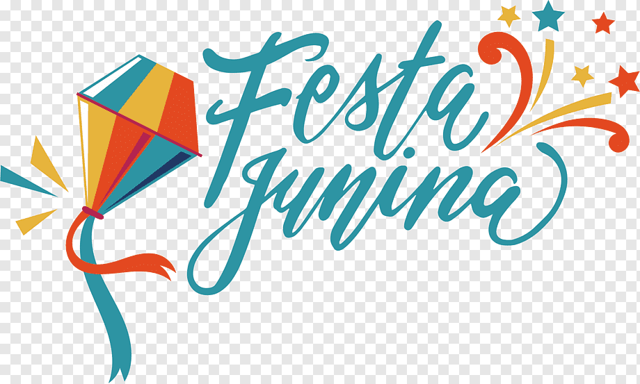

nome: Nicolle Gadelha
As festas juninas são uma das celebrações mais marcantes e tradicionais da cultura brasileira, representando um verdadeiro espetáculo de cores, sabores e alegria. Originadas de festividades religiosas em homenagem a santos católicos, como São João, São Pedro e Santo Antônio, essas festas foram sendo incorporadas à cultura popular, tornando-se uma expressão única da identidade nacional. Uma das características mais distintivas das festas juninas é a sua atmosfera festiva e acolhedora, que contagia pessoas de todas as idades. Os arraiais, com suas barraquinhas decoradas, bandeirinhas coloridas e fogueiras crepitantes, criam um ambiente único, onde as tradições se mesclam com a alegria das danças, músicas e comidas típicas. A dança é um dos pontos altos das festas juninas, com destaque para as quadrilhas, que reúnem grupos de dançarinos vestidos com trajes caipiras, executando coreografias animadas e cheias de energia. O casamento na roça, o correio elegante e outras brincadeiras tradicionais também fazem parte dessa festividade, trazendo um clima de diversão e descontração. Além disso, as festas juninas são conhecidas pela sua gastronomia característica, repleta de quitutes deliciosos que fazem a alegria de todos os presentes. Entre as iguarias mais populares estão a canjica, o quentão, o milho cozido, a pamonha, o pé-de-moleque e, é claro, as famosas maçãs do amor. No contexto atual, as festas juninas têm se reinventado, adaptando-se às mudanças sociais e tecnológicas, mas sem perder sua essência e tradição. Seja nas grandes cidades ou nos pequenos vilarejos do interior, as festas juninas continuam a reunir pessoas de todas as origens, celebrando a cultura brasileira em sua forma mais autêntica. 
1. Correio Elegante: Os participantes escrevem mensagens românticas ou engraçadas em papéis e enviam anonimamente para outras pessoas na festa.
2. Pescaria: Uma das mais populares, onde há pequenos prêmios ou doces escondidos em recipientes que simulam peixes.
3. Boca do Palhaço: Os participantes lançam argolas para tentar acertar a boca do palhaço desenhada em um painel.
4. Jogo de Argolas: Similar à Boca do Palhaço, mas os participantes tentam encaixar argolas em garrafas.
5. Tiro ao Alvo: Os participantes tentam acertar um alvo com arma de brinquedo, ganhando prêmios conforme a pontuação.
6. Barracas de Brincadeiras: São montadas barracas com jogos diversos, como derrubar latas, acertar alvos, entre outros.
7. Casamento na Roça: Encenação de um casamento caipira, com noivos e padrinhos caracterizados, seguido de uma dança típica.
8. Desfile de Quadrilhas: As quadrilhas juninas competem em danças coreografadas, com trajes típicos e músicas tradicionais.
9. Cadeia: Uma pessoa fantasiada de policial prende outras pessoas por algum motivo fictício, e elas precisam "pagar fiança" para serem liberadas.
10. Corrida do Saci: Uma corrida em que os participantes têm uma das pernas amarradas e precisam alcançar a linha de chegada sem cair.
As festas juninas são uma das manifestações culturais mais enraizadas e populares do Brasil, representando uma fusão única de elementos religiosos, históricos e culturais. Sua origem remonta às festividades religiosas europeias em homenagem a São João Batista, São Pedro e Santo Antônio, que eram celebradas em junho, coincidindo com o solstício de verão no hemisfério norte. Com a chegada dos colonizadores portugueses ao Brasil, essas tradições foram trazidas para cá e gradualmente mescladas com elementos das culturas indígena e africana, dando origem às festas juninas como as conhecemos hoje. No entanto, é importante ressaltar que as festas juninas brasileiras não são simplesmente uma cópia das europeias, mas sim uma reinvenção única e autêntica, incorporando influências de diferentes origens e adaptadas ao contexto local. As festas juninas são marcadas por uma série de rituais e práticas tradicionais, como as fogueiras, que simbolizam a purificação e a renovação, e as quadrilhas, que têm suas raízes nas danças de roda europeias, mas foram reinterpretadas e transformadas em uma forma de expressão artística tipicamente brasileira. Além disso, as festas juninas são conhecidas pela sua gastronomia característica, com pratos como a canjica, o milho cozido, o quentão, a pamonha e o bolo de milho, que refletem a abundância dos alimentos da época de colheita e são compartilhados entre amigos e familiares em um espírito de comunhão e partilha. Ao longo dos séculos, as festas juninas evoluíram e se adaptaram às mudanças sociais e culturais, mantendo-se vivas e relevantes na contemporaneidade. Elas são uma parte essencial do calendário festivo brasileiro, celebradas em todo o país com uma mistura de devoção religiosa, folclore, música, dança e, é claro, muita diversão. Em suma, as festas juninas são muito mais do que simples eventos festivos. Elas são uma expressão vibrante da identidade cultural brasileira, enraizada em tradições antigas, mas sempre em constante renovação. São momentos de celebração, alegria e reafirmação dos laços comunitários, que nos conectam com as nossas origens e nos lembram da riqueza e diversidade do nosso patrimônio cultural.